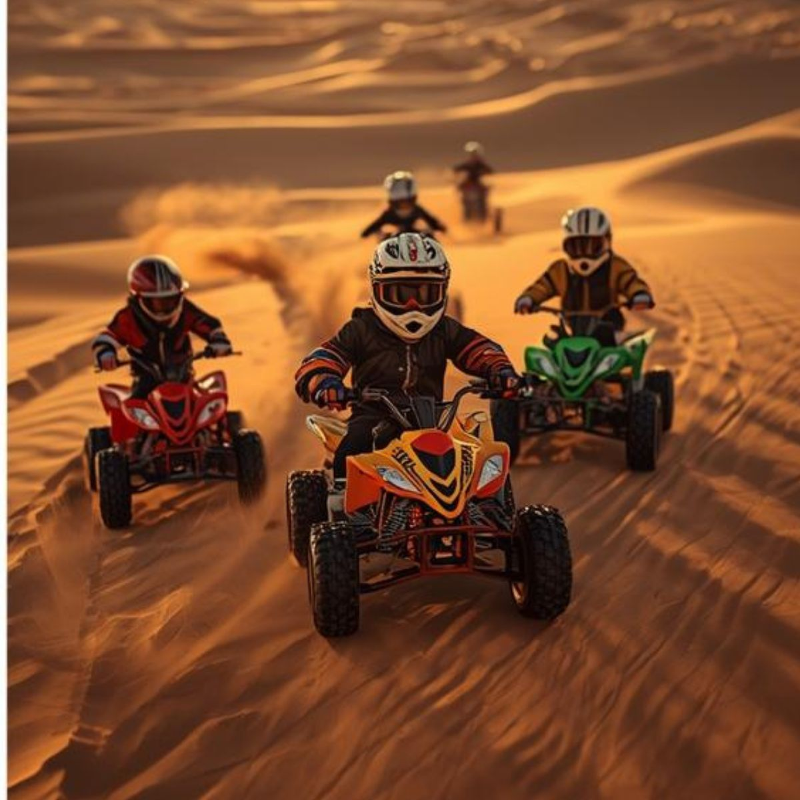
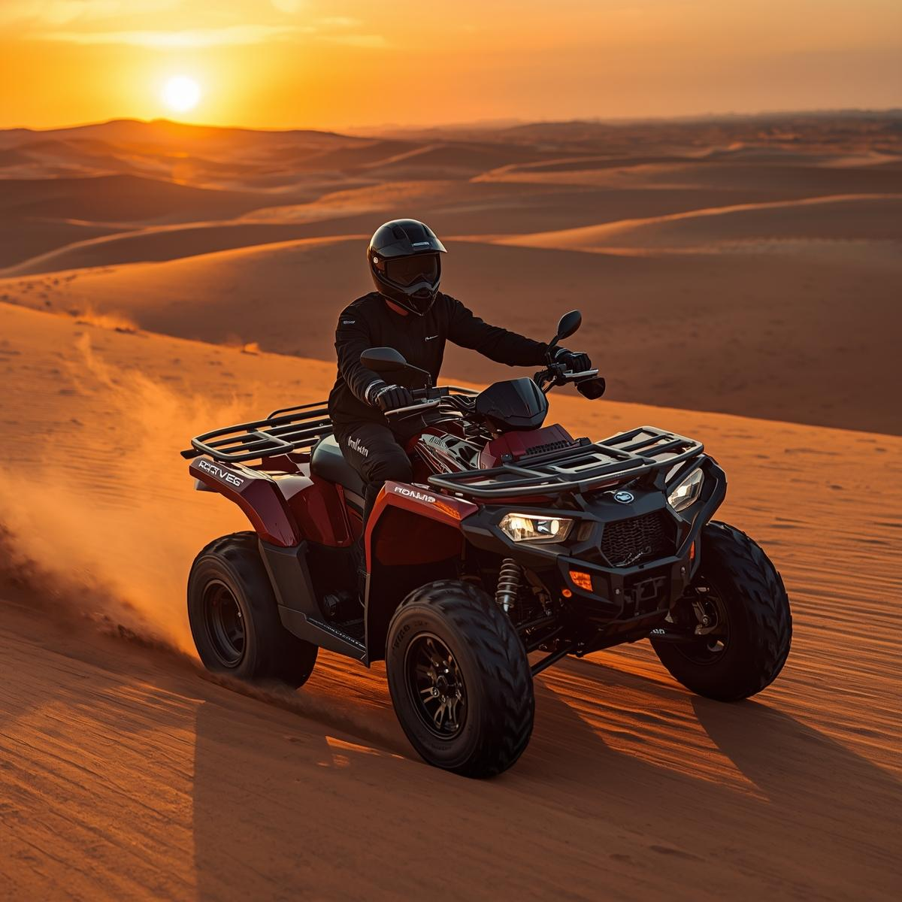

Explore the Most Exciting Desert Locations for Quad Biking
30 minutes (70 cc)
Dubai, UAE
4.9

60 minutes (70cc)
Dubai, UAE
4.8
120 minutes (70cc)
Dubai, UAE
4.7
At Dune Bike Adventure, we provide a safe and thrilling quad biking experience specially designed for kids in Dubai. Our guided tours take young adventurers across the golden desert dunes, offering an unforgettable outdoor activity for the whole family.
Each kid-friendly quad bike is carefully maintained and comes with helmets and protective gear, ensuring safety and fun at every turn. Perfect for children aged 5–15, our desert rides are ideal for family outings, birthday parties, or school trips.
Book your Dubai desert quad biking adventure today and give your kids an exciting, memorable, and safe ride in the heart of the desert!
Experience the best kids quad bike tours in Dubai with experienced instructors, scenic dune routes, and fully supervised rides. Our kids quad biking adventures are crafted to provide excitement, confidence, and a love for outdoor activities while keeping safety as the top priority. Don’t miss the chance to make your child’s desert adventure an experience they’ll cherish forever!
Single Seat Quad Bikes (Incircle)
Explore the Most Exciting Desert Locations for Quad Biking
30 minutes - INCIRCLE (250cc)
Dubai, UAE
4.9
60 minutes - INCIRCLE (250cc)
Dubai, UAE
4.8
120 minutes - INCIRCLE (250cc)
Dubai, UAE
4.7
Take the thrill up a notch with our single seat quad bikes in Dubai! Perfect for adventure seekers, these quad bikes are designed for individuals looking for speed, control, and an adrenaline-packed ride across the golden desert dunes. Each bike is regularly maintained and equipped with safety gear including helmets and gloves, ensuring a secure yet exhilarating experience.
Our single seat quad bike tours are guided by experienced instructors who provide full training before the ride. Whether you're a beginner or an experienced rider, our desert tours offer scenic routes, sand dune challenges, and unforgettable memories. Book your single seat quad bike adventure today and feel the excitement of riding across Dubai’s iconic desert landscapes!
Ideal for solo riders, adventure enthusiasts, and thrill-seekers, our single seat quad bike experience combines safety, speed, and scenic beauty. Make your Dubai desert adventure truly special with our top-notch single seat quad bikes and expert guidance.
Double Seater Quad Bikes (Open Desert)
Explore the Most Exciting Desert Locations for Quad Biking
30 minutes - Open Desert (450cc)
Dubai, UAE
4.9
60 minutes - Open Desert (450cc)
Dubai, UAE
4.8
120 minutes - Open Desert (450cc)
Dubai, UAE
4.7
Experience the ultimate desert adventure with our double seat quad bikes in Dubai! Perfect for couples, friends, or family members, these quad bikes allow two riders to enjoy the thrill of dune riding together. Each bike is well-maintained, fast, and equipped with safety gear including helmets and gloves, ensuring a safe and unforgettable experience.
Our double seat quad bike tours are guided by expert instructors who provide full training and supervision. Whether you're a beginner or an experienced rider, our desert routes offer scenic dunes, exciting sand trails, and breathtaking views of Dubai’s desert landscapes. Feel the adrenaline rush while riding together on our high-performance quad bikes!
Designed for shared adventure, our double seat quad bikes are ideal for couples seeking a romantic thrill or friends looking for a fun experience. Create lasting memories while exploring the iconic Dubai desert with comfort, safety, and excitement combined.
Book your double seat quad bike adventure today and enjoy the perfect combination of speed, scenic beauty, and shared excitement. Make your Dubai desert safari an experience to remember with our expertly guided double seat quad bike tours!
Custom Packages
Explore the Most Exciting Desert Locations for Quad Biking
Group Bookings (5+ people)
Dubai, UAE
4.9
Birthday / Events Rides
Dubai, UAE
4.8

VIP / Private Quad Ride
Dubai, UAE
4.7
Tailor your desert adventure with our custom quad bike packages in Dubai! Whether you're planning a solo adventure, a family outing, or a group event, we offer flexible packages that can be customized to fit your schedule, preferences, and thrill level. Choose from different ride durations, locations, and experiences for a truly personalized adventure.
Our expert team will help you design a package that combines excitement, safety, and comfort. From scenic desert trails to adrenaline-pumping dune rides, our custom packages cater to beginners and experienced riders alike. Every package includes helmets, gloves, and safety gear to ensure a safe and enjoyable ride.
Looking for a private experience? We can arrange exclusive tours on our high-quality single-seat or double-seat quad bikes. Perfect for special occasions, corporate events, or milestone celebrations, our custom packages create unforgettable memories in the Dubai desert.
Book your custom quad bike adventure today and experience the freedom to explore Dubai’s desert your way. With personalized itineraries, flexible timings, and expert guidance, our custom packages guarantee an adventure that’s as unique as you are!
Your Desert Adventure Simplified
Everything You Need for an Exciting Quad Biking Experience
Easy Booking
Book Your Ride Instantly
Reserve your quad bike adventure in just a few clicks. Choose your
date, pick your ride, and get ready for the desert thrill.
Tailored Routes
Customized Desert Tours
Explore sand dunes, oases, and desert landscapes on personalized
routes designed for both thrill-seekers and nature lovers.
Expert Guides
Safe & Knowledgeable Guides
Our experienced guides ensure your adventure is thrilling and safe,
while showing you the best spots for photos and desert fun.
EXPERIENCE THE DESERT LIKE NEVER BEFORE
Join Skywings for an adrenaline-packed quad biking adventure across
the UAE's stunning deserts. Feel the rush of riding across sand dunes
and enjoy the ultimate desert safari experience.
From beginner-friendly tracks to extreme dune trails, we cater to
every adventurer. Capture breathtaking sunsets, explore hidden dunes,
and make memories that will last a lifetime.
10+
Years of Adventure
15K
Thrilled Riders
4.9
Average Rating
Discover The Desert
Stunning Landscapes, Hidden Oases, and Endless Sand Dunes
Scenic Views
Capture panoramic shots of endless dunes and breathtaking desert
vistas from unique vantage points.
Oasis Exploration
Ride to hidden desert oases and experience serene natural beauty
away from the crowds.
Adventure Trails
Tackle thrilling dunes and adventurous trails designed for both
beginners and experienced riders.
What Our Riders Say
Hear from adventurers who experienced the thrill of desert quad biking
The quad biking adventure with Skywings was exhilarating! Riding
through the dunes was an unforgettable experience. Highly recommend
to anyone seeking thrill and adventure!
John Adams
Adventure Seeker
Amazing experience! The guides were professional, and the desert
trails were thrilling. Skywings made the entire trip seamless and fun.
Emily Thompson
Thrill Enthusiast
I loved every moment of the desert safari. The quad bike trails,
the dunes, and the stunning scenery made it a perfect adventure!